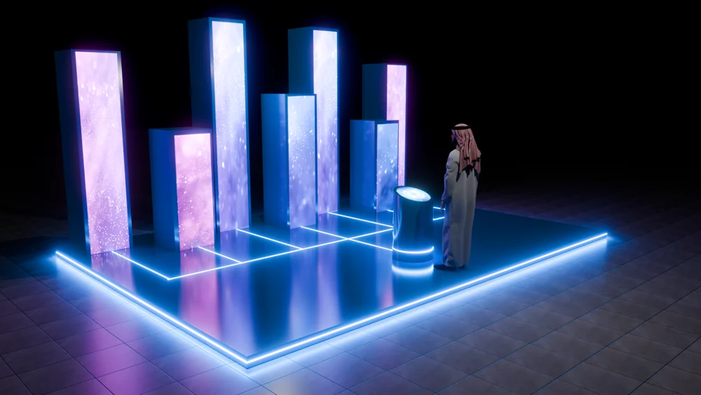

Curved wall with podium
The wide view contains three joined screens, an illuminated podium and a human figure for scale.
Different screens. Different ways to gather.
Explore the story
Explore how screen arrangements shape a shared viewing space.
One concept uses a curved visual wall and separate podium. Another distributes content across upright pillars around a circular element, offering a different spatial rhythm.
The wide view contains three joined screens, an illuminated podium and a human figure for scale.
A separate render shows upright screen pillars and a circular display.
A curved wall with a separate podium creates a broad visual backdrop.
Explore the complete compositions and interface states. Select any image for a closer look.
02 / PROJECT IMAGES
Select a view to explore.
Curved multi-screen installation concept with an illuminated podium and a person for scale.
Concept visualization of freestanding screen pillars and a circular display.

Structure, interaction and visual decisions that give the work its character.
RoleConfirm display arrangement, scene composition, lighting and screen-content design separately.
AssetsHuman figures, device models, screen artwork and other reusable assets need source credits. Original geometry is not established.
StatusSpatial concept imagery; delivery and contribution unverified.